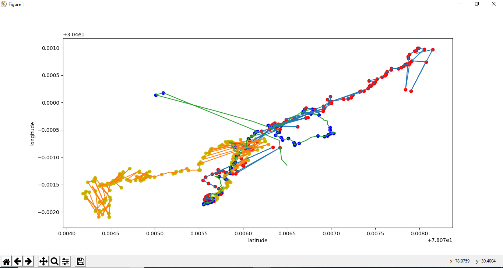
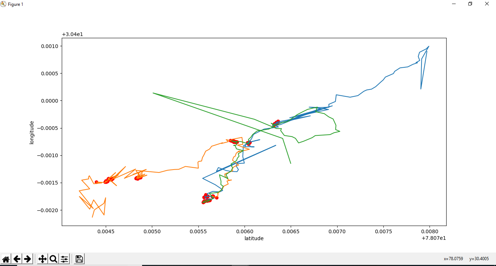

In this project, we have to find the behaviour of a mob movement or gathering. A mob is generally a huge gathering of people and their leader in a place. Initially, there is a gathering of few people, then few more join them in a place, then more add and finally the mob is gathered at a place. This projects helps us to determine the route and the path of the mob gathered.
Now our Aim was to find curve and stop points from the datasets.
- Curved points: Curved points are those points in a GPS dataset where there is a sharp curved path in the trajectory.
- Stop points: Stop points are those points in a GPS dataset where the subject has stopped any movement.
We were not given any dataset for this practical. So our first aim was to gather the dataset. Now how can we see the route of a person? As everyone has smartphone, so its GPS location can be extracted. Now to extract GPS locations for our project, we used GPS Logger. This can be downloaded from Google Playstore. Click here to download it.
We used 3 devices and collected the dataset by moving from different locations and meeting at a place. Three csv files were collected. Sauravgps.csv, vinaygps.csv, and shailengps.csv Only one csv file is present in the repository for reference.
After extracting GPS datasets in a csv format using GPS Logger, we used various algorithms as mentioned in the python scripts in the repository. The stop points and curved points were plotted and are shown below:
 Curved points Stop Points
The complete code and reference to this project is given in my
github repository .
Thank You for reading.